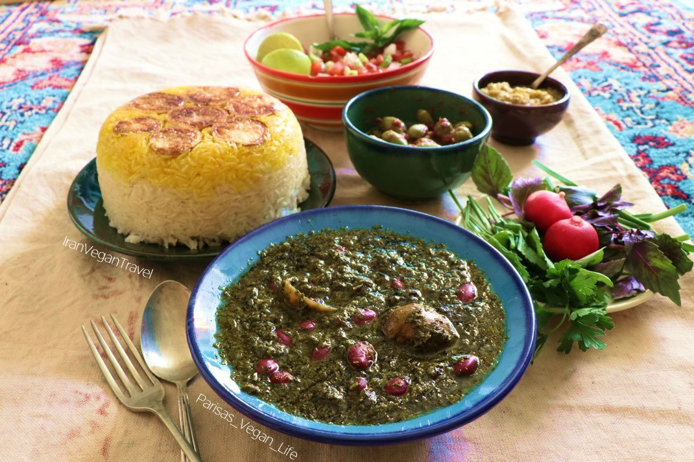
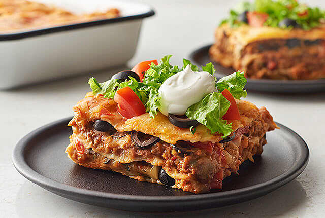

Ghorme Sabzi

Description of the Dish
Ghormeh sabzi (Persian: قورمه سبزی) or khoresht sabzi (Persian: خورشت سبزی), also spelled qormeh sabzi, is an Iranian herb stew.
It is considered the national dish of Iran. It is a very popular dish in Iran.
Ingrediants
- 1½ pounds lamb shoulder or beef chuck, trimmed and cut into 2-inch pieces
- 1 heaping teaspoon ground turmeric
- Fine sea salt and freshly ground black pepper
- ½ cup dried kidney beans
- 3 tablespoons plus ¼ cup extra-virgin olive oil
- 1 large yellow onion, thinly sliced
- 1 pound Italian parsley (about 3 large bunches)
- 1 pound cilantro (about 3 large bunches)
- 2 bunches chives
- 1 bunch scallions, roots trimmed
- 1 tablespoon dried fenugreek leaves
- 4 Omani (dried Persian) limes, rinsed and punctured multiple times with a fork
- ¼ teaspoon crumbled saffron threads
Steps
- Heat 2 tablespoons oil in a large pot over medium-high heat. Add onion; cook and stir until deep golden brown, 10 to 15 minutes. Stir in turmeric for 1 to 2 minutes.
Add chuck cubes; cook until coated in turmeric and browned on all sides, 8 to 10 minutes.
- Heat remaining 2 tablespoons oil in a separate pot over medium heat.
Add spinach, green onions, parsley, cilantro, chives, and fenugreek leaves; cook and stir until deep dark green in color, 5 to 10 minutes.
- Stir spinach mixture into onion and chuck mixture. Pour in enough water to create a slurry consistency. Season with salt and pepper.
Stir in lemon juice. Reduce heat, cover, and simmer stew until greens soften, about 1 hour.
- Pierce dried limes with a fork; add to stew. Continue simmering until chuck is tender, 30 minutes to 1 hour. Stir in red kidney beans.
Cook until flavors combine, about 30 more minutes. Discard dried limes before serving.
Mexican Lasagna

Description
Lasagna duh!!!
Ingrediants
- 1 ½ pounds ground beef
- ¼ cup water
- 1 (1 ounce) packet taco seasoning mix
- 12 (8 inch) flour tortillas, or more if needed
- 1 (14 ounce) can refried beans
- 3 cups shredded Colby-Jack cheese
- 1 (8 ounce) jar taco sauce
- 1 cup shredded Colby-Jack cheese
Steps
- Preheat oven to 350 degrees F (175 degrees C). Grease a 9x13-inch casserole dish.
- Heat a large skillet over medium-high heat and stir in ground beef.
Cook and stir until beef is crumbly, evenly browned, and no longer pink, about 10 minutes.
Drain and discard any excess grease. Add water and taco seasoning; cook and stir until mixture has thickened, 5 to 10 minutes.
- Arrange 3 tortillas in the bottom of the casserole dish; spread about half the can of refried beans and half the ground beef atop the tortilla layer.
Sprinkle 1 cup Colby-Jack cheese over ground beef layer.
Arrange 3 more tortillas over the cheese.
Spread in the remaining 1/2 can refried beans and half the jar of taco sauce; sprinkle with 1 cup Colby-Jack cheese.
Arrange 3 more tortillas and top with remaining ground beef and 1 cup Colby-Jack cheese. Top with last 3 tortillas and remaining 1/2 jar taco sauce.
- Bake in the preheated oven until top tortilla layer begins to brown, 20 to 25 minutes. Sprinkle 1 cup Colby-Jack cheese over lasagna.
- Turn on oven's broiler.
- Place lasagna under the broiler until Colby-Jack cheese is melted and bubbling, 3 to 5 minutes.